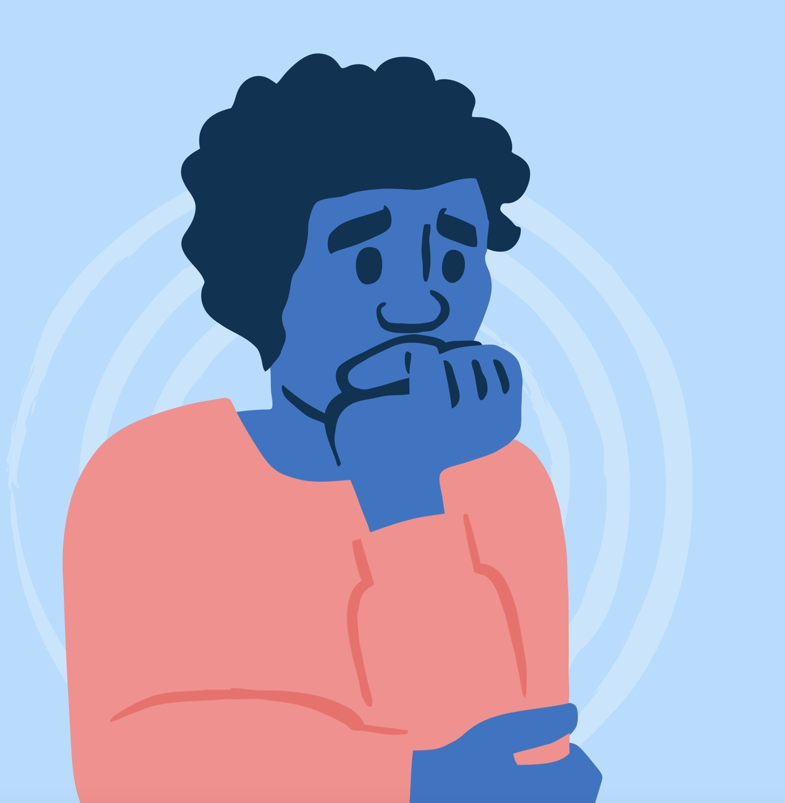
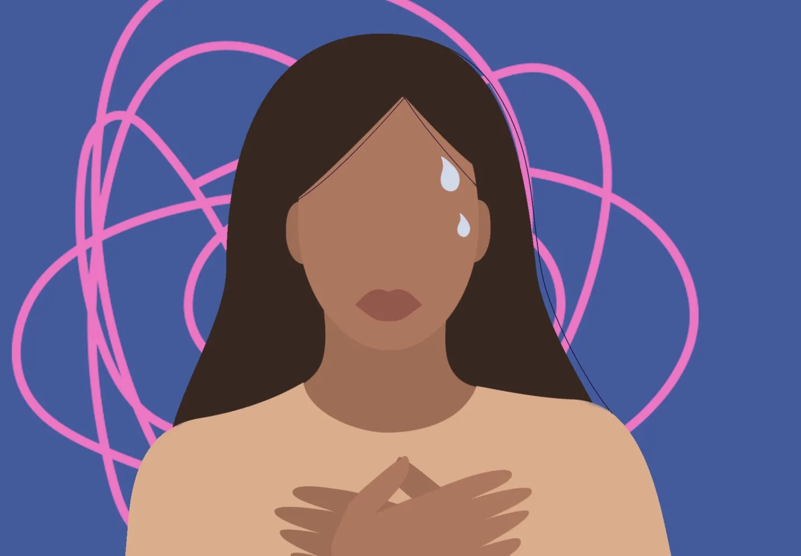
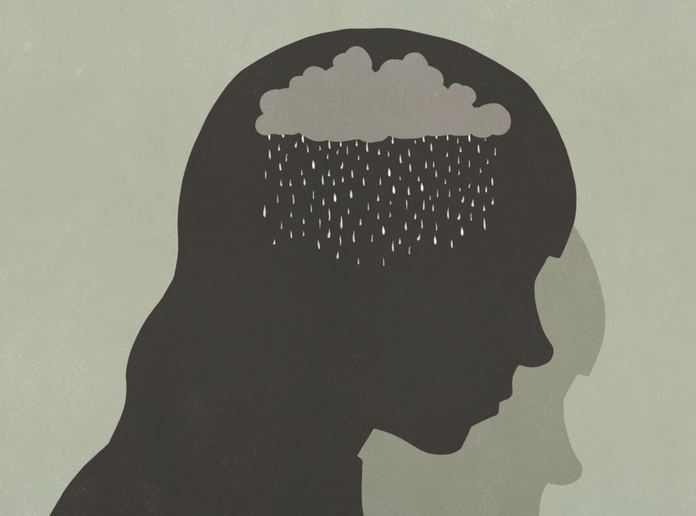

Resources and tips to help you and others with anxiety-related issues.

(1) Take a time-out, (2) eat well-balanced meals, (3) limit alcohol and caffeine, (4) get enough sleep, (5) exercise daily.
tips from ADAA
When we let anxiety run its course in the moment without fighting it, ironically, that makes it less. On the other hand, fighting anxiety is what typically [triggers] a panic attack

(1) Set small daily goals, (2) find forms of exercise, (3) distract yourself, (4) recruit an "exercise buddy", (5) be patient
tips from ADAA
I think that there's hope for everybody, and we just have to figure out how to help people feel ultimately empowered and safe.
If you continue to modify your behavior or the environment to accommodate your loved one’s anxiety, this can unintentionally enable the anxiety to persist and grow. Avoiding difficult situations doesn’t give your loved one the opportunity to overcome fears and learn how to master anxiety. Instead, it makes their world smaller as what they are able to do becomes more and more limited by their growing anxiety.
from John Hopkins Medicine

Take control of that energy and put it somewhere else. If you are sitting there worried, for example, get up and walk or pace. Take a few minutes to clean something. Go outside for 5 minutes. Shorts bursts of activity can release that anxious energy. Use a guided imagery app or simply daydream on your own. A brief mental vacation can break the cycle of anxious thoughts.
National Alliance on Mental Illness (NAMI); 800-950-NAMI (800-950-6264)
Anxiety and Depression Association of America (ADAA); 240-485-1001.
National Institute of Mental Health (NIMH); 866-615-6464.
Centers for Disease Control and Prevention, Division of Mental Health (CDC); 800-CDC-INFO (800-232-4636)